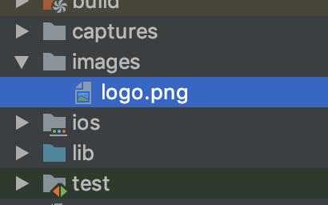

<!DOCTYPE html>
<html lang="en">

<head><meta name="generator" content="Hexo 3.9.0">
  <meta charset="utf-8">
    
  <meta name="viewport" content="width=device-width, initial-scale=1, maximum-scale=1">
  <title>
    flutter--图片Image |  MonkeyInWind
  </title>
  
  <link rel="shortcut icon" href="/favicon.ico">
  
  <link rel="stylesheet" href="/css/style.css">
  <script src="/js/pace.min.js"></script>

  

<script type="text/javascript">
(function(i,s,o,g,r,a,m){i['GoogleAnalyticsObject']=r;i[r]=i[r]||function(){
(i[r].q=i[r].q||[]).push(arguments)},i[r].l=1*new Date();a=s.createElement(o),
m=s.getElementsByTagName(o)[0];a.async=1;a.src=g;m.parentNode.insertBefore(a,m)
})(window,document,'script','//www.google-analytics.com/analytics.js','ga');

ga('create', 'UA-155359064-1', 'auto');
ga('send', 'pageview');

</script>


  

</head>

</html>

<body>
  <div id="app">
    <main class="content">
      <section class="outer">
  <article id="post-flutterImageWidget" class="article article-type-post" itemscope
  itemprop="blogPost" data-scroll-reveal>

  <div class="article-inner">
    
    <header class="article-header">
       
<h1 class="article-title sea-center" style="border-left:0" itemprop="name">
  flutter--图片Image
</h1>
  

    </header>
    

    
    <div class="article-meta">
      <a href="/post/flutterImageWidget/" class="article-date">
  <time datetime="2020-01-05T10:49:05.000Z" itemprop="datePublished">2020-01-05</time>
</a>
      
    </div>
    

    
    
    <div class="tocbot"></div>


    

    <div class="article-entry" itemprop="articleBody">
      


      

      
      <p>先看一下constructor</p>
<a id="more"></a>
<figure class="highlight plain"><table><tr><td class="gutter"><pre><span class="line">1</span><br><span class="line">2</span><br><span class="line">3</span><br><span class="line">4</span><br><span class="line">5</span><br><span class="line">6</span><br><span class="line">7</span><br><span class="line">8</span><br><span class="line">9</span><br><span class="line">10</span><br><span class="line">11</span><br><span class="line">12</span><br><span class="line">13</span><br><span class="line">14</span><br><span class="line">15</span><br><span class="line">16</span><br><span class="line">17</span><br></pre></td><td class="code"><pre><span class="line">Image(&#123;</span><br><span class="line">  Key key,</span><br><span class="line">  @required ImageProvider image,                        //抽象的构造函数，提供图片加载入口</span><br><span class="line">  String semanticLabel,                                  //语义标签</span><br><span class="line">  bool excludeFromSemantics: false,                    //看文档好像是语义化</span><br><span class="line">  double width,                                           //宽</span><br><span class="line">  double height,                                         //高            </span><br><span class="line">  Color color,                                            //混合色值</span><br><span class="line">  BlendMode colorBlendMode,                              //混合模式</span><br><span class="line">  BoxFit fit,                                           //填充模式</span><br><span class="line">  AlignmentGeometry alignment: Alignment.center,          //对齐方式</span><br><span class="line">  ImageRepeat repeat: ImageRepeat.noRepeat,              //重复方式</span><br><span class="line">  Rect centerSlice,                                      //图片拉伸</span><br><span class="line">  bool matchTextDirection: false,                        //是否按书写方向绘制图片</span><br><span class="line">  bool gaplessPlayback: false,                          //图片路径发生改变后，加载新图片过程中是否显示旧图</span><br><span class="line">  FilterQuality filterQuality: FilterQuality.low        //看官网说貌似和图片质量有关系</span><br><span class="line">&#125;);</span><br></pre></td></tr></table></figure>

<h2 id="一、加载一张图片"><a href="#一、加载一张图片" class="headerlink" title="一、加载一张图片"></a>一、加载一张图片</h2><p>flutter提供了4中图片的加载方式</p>
<h3 id="1、本地图片"><a href="#1、本地图片" class="headerlink" title="1、本地图片"></a>1、本地图片</h3><p>首先新建一个<code>images</code>的文件夹，随便放一张图片进去，我这里在官网下载了flutter的logo<br></p>
<p>打开<code>pubspec.yaml</code>在<code>flutter</code>下添加<code>assets</code></p>
<figure class="highlight plain"><table><tr><td class="gutter"><pre><span class="line">1</span><br><span class="line">2</span><br><span class="line">3</span><br><span class="line">4</span><br></pre></td><td class="code"><pre><span class="line">flutter:</span><br><span class="line">  uses-material-design: true</span><br><span class="line">  assets:</span><br><span class="line">    - images/logo.png</span><br></pre></td></tr></table></figure>

<p>接下来上代码</p>
<figure class="highlight plain"><table><tr><td class="gutter"><pre><span class="line">1</span><br><span class="line">2</span><br><span class="line">3</span><br><span class="line">4</span><br><span class="line">5</span><br><span class="line">6</span><br><span class="line">7</span><br><span class="line">8</span><br><span class="line">9</span><br><span class="line">10</span><br><span class="line">11</span><br><span class="line">12</span><br><span class="line">13</span><br><span class="line">14</span><br><span class="line">15</span><br><span class="line">16</span><br><span class="line">17</span><br><span class="line">18</span><br><span class="line">19</span><br><span class="line">20</span><br></pre></td><td class="code"><pre><span class="line">import &apos;package:flutter/material.dart&apos;;</span><br><span class="line"></span><br><span class="line">void main() =&gt; runApp(MyApp());</span><br><span class="line"></span><br><span class="line">class MyApp extends StatelessWidget &#123;</span><br><span class="line">  // This widget is the root of your application.</span><br><span class="line">  @override</span><br><span class="line">  Widget build(BuildContext context) &#123;</span><br><span class="line">    return MaterialApp(</span><br><span class="line">      title: &apos;Flutter Demo&apos;,</span><br><span class="line">      home: Scaffold(</span><br><span class="line">        body: new Center(</span><br><span class="line">          child: new Image(</span><br><span class="line">            image: AssetImage(&quot;images/logo.png&quot;)</span><br><span class="line">          )</span><br><span class="line">        )</span><br><span class="line">      )</span><br><span class="line">    );</span><br><span class="line">  &#125;</span><br><span class="line">&#125;</span><br></pre></td></tr></table></figure>

<p>这样一张本地图片就加载完成了。如果有2倍图3倍图需要在images文件夹下建<code>2.0x/3.0x</code>文件夹。<br>flutter还提供了简写的方式</p>
<figure class="highlight plain"><table><tr><td class="gutter"><pre><span class="line">1</span><br><span class="line">2</span><br><span class="line">3</span><br></pre></td><td class="code"><pre><span class="line">body: new Center(</span><br><span class="line">  child: new Image.asset(&apos;images/logo.png&apos;)</span><br><span class="line">)</span><br></pre></td></tr></table></figure>

<p>是不是有问题，一张两张图片还可以，静态文件多了都要添加在<code>pubspec.yaml</code>是不是很麻烦，fultter支持只写文件夹路径，注意<code>/</code>不要忘了。</p>
<figure class="highlight plain"><table><tr><td class="gutter"><pre><span class="line">1</span><br><span class="line">2</span><br><span class="line">3</span><br><span class="line">4</span><br></pre></td><td class="code"><pre><span class="line">flutter:</span><br><span class="line">  uses-material-design: true</span><br><span class="line">  assets:</span><br><span class="line">    - images/</span><br></pre></td></tr></table></figure>

<h3 id="2、网络图片"><a href="#2、网络图片" class="headerlink" title="2、网络图片"></a>2、网络图片</h3><p>本地图片需要添加到<code>pubspec.yaml</code>网络图片直接按上边的方法写是肯定不行的，需要用<code>NetworkImage</code>方法。</p>
<figure class="highlight plain"><table><tr><td class="gutter"><pre><span class="line">1</span><br><span class="line">2</span><br><span class="line">3</span><br><span class="line">4</span><br><span class="line">5</span><br></pre></td><td class="code"><pre><span class="line">body: new Center(</span><br><span class="line">  child: new Image(</span><br><span class="line">    image: NetworkImage(&apos;https://cdn.jsdelivr.net/gh/flutterchina/website@1.0/images/flutter-mark-square-100.png&apos;)</span><br><span class="line">  )</span><br><span class="line">)</span><br></pre></td></tr></table></figure>

<p>对于网络图片flutter同样提供了简写</p>
<figure class="highlight plain"><table><tr><td class="gutter"><pre><span class="line">1</span><br><span class="line">2</span><br><span class="line">3</span><br></pre></td><td class="code"><pre><span class="line">body: new Center(</span><br><span class="line">  child: new Image.network(&apos;https://cdn.jsdelivr.net/gh/flutterchina/website@1.0/images/flutter-mark-square-100.png&apos;)</span><br><span class="line">)</span><br></pre></td></tr></table></figure>

<h3 id="3、FileImage"><a href="#3、FileImage" class="headerlink" title="3、FileImage"></a>3、FileImage</h3><h3 id="4、Image-momery"><a href="#4、Image-momery" class="headerlink" title="4、Image.momery"></a>4、Image.momery</h3><h2 id="二、设置样式-属性"><a href="#二、设置样式-属性" class="headerlink" title="二、设置样式/属性"></a>二、设置样式/属性</h2><h3 id="1、semanticLabel-amp-excludeFromSemantics"><a href="#1、semanticLabel-amp-excludeFromSemantics" class="headerlink" title="1、semanticLabel &amp; excludeFromSemantics"></a>1、semanticLabel &amp; excludeFromSemantics</h3><p><code>semanticLabel</code>看文档应该是和html里img标签的alt属性类似。<br><code>excludeFromSemantics</code>如果为true，则<code>semanticLabel</code>被忽略。</p>
<h3 id="2、width-amp-height"><a href="#2、width-amp-height" class="headerlink" title="2、width &amp; height"></a>2、width &amp; height</h3><figure class="highlight plain"><table><tr><td class="gutter"><pre><span class="line">1</span><br><span class="line">2</span><br><span class="line">3</span><br><span class="line">4</span><br><span class="line">5</span><br><span class="line">6</span><br><span class="line">7</span><br></pre></td><td class="code"><pre><span class="line">body: new Center(</span><br><span class="line">  child: new Image(</span><br><span class="line">    image: new AssetImage(&apos;images/logo.png&apos;),</span><br><span class="line">    width: 50.0,</span><br><span class="line">    height: 50.0</span><br><span class="line">  )</span><br><span class="line">)</span><br></pre></td></tr></table></figure>

<p>这里需要注意的是，图片的宽高是等比缩放，并且图片显示不会超过原图的尺寸，下面解释一下。<br>比如一张尺寸为<code>200.0*200.0</code>的图片。<br>1、单方向设置尺寸，例：设置<code>width</code>为<code>100.0</code>，则<code>height</code>等比例调整为<code>100.0</code>。<br>2、如果同时设置宽高，设置的尺寸小于等于图片尺寸，但是与原图比例不同：<code>width: 100.0, height: 200.0</code>，则<code>image</code>这个节点为设置的尺寸，但是图片显示为宽<code>100.0</code>高<code>100.0</code>，居中显示。<br>3、如果同时设置尺寸，并且两个尺寸都大于图片的实际尺寸，例：<code>width: 300.0, height: 300.0</code>，则<code>image</code>这个节点为设置的尺寸即<code>300.0*300.0</code>，图片显示为图片本身的尺寸即<code>200.0*200.0</code>居中显示。</p>
<h3 id="3、color"><a href="#3、color" class="headerlink" title="3、color"></a>3、color</h3><figure class="highlight plain"><table><tr><td class="gutter"><pre><span class="line">1</span><br></pre></td><td class="code"><pre><span class="line">color: Colors.red</span><br></pre></td></tr></table></figure>

<p>如果和我一样用了flutter官网的logo，会发现图片变成了红色，这个是设置图片的前景色，会覆盖图片，如果不是背景色透明的图片，会把整张图片覆盖。</p>
<h3 id="4、colorBlendMode"><a href="#4、colorBlendMode" class="headerlink" title="4、colorBlendMode"></a>4、colorBlendMode</h3><p>混合模式，这里先不说单开一篇分析一下混合模式。</p>
<h3 id="5、fit"><a href="#5、fit" class="headerlink" title="5、fit"></a>5、fit</h3><p>上边说<code>width&amp;height</code>的时候，如果设置的宽高大于图片本身的尺寸，图片会以本身的尺寸居中显示，如果想让他以设置的尺寸显示，就需要这个fit。</p>
<figure class="highlight plain"><table><tr><td class="gutter"><pre><span class="line">1</span><br><span class="line">2</span><br><span class="line">3</span><br><span class="line">4</span><br><span class="line">5</span><br><span class="line">6</span><br></pre></td><td class="code"><pre><span class="line">new Image(</span><br><span class="line">  image: new AssetImage(&apos;images/logo.png&apos;),</span><br><span class="line">  width: 300.0,</span><br><span class="line">  height: 300.0,</span><br><span class="line">  fit: BoxFit.fill</span><br><span class="line">)</span><br></pre></td></tr></table></figure>

<p><code>fill</code>：设置多少就是多少，图片会被拉伸。<br><code>contain</code>: 缩放图片以完全装图片，可能有部分空白。<br><code>cover</code>: 缩放图片以完全覆盖图片区域，图片可能有部分看不见。<br><code>fitHeight</code>: 充满高，可能有部分图片无法显示。<br><code>fitWidth</code>：充满宽，可能有部分图片无法显示。<br><code>scaleDown</code>：在不大于原图尺寸的情况下，与<code>contain</code>效果相同，如果超过原图尺寸，则以原图大小居中显示。<br>经过总结发现这个<code>fit</code>有一些属性和css中<code>background-size</code>效果相同，比如<code>cover/contain</code>。</p>
<h3 id="6、alignment"><a href="#6、alignment" class="headerlink" title="6、alignment"></a>6、alignment</h3><p>对齐方式</p>
<figure class="highlight plain"><table><tr><td class="gutter"><pre><span class="line">1</span><br><span class="line">2</span><br><span class="line">3</span><br><span class="line">4</span><br><span class="line">5</span><br><span class="line">6</span><br></pre></td><td class="code"><pre><span class="line">child: new Image(</span><br><span class="line">  image: new AssetImage(&apos;images/logo.png&apos;),</span><br><span class="line">  width: 100.0,</span><br><span class="line">  height: 100.0,</span><br><span class="line">  alignment: Alignment.center,</span><br><span class="line">)</span><br></pre></td></tr></table></figure>

<p>这里不详细说了，和<code>Container</code>的<code>alignment</code>写法效果一样，<code>需要注意的是，image的alignment作用在自己身上，Container的alignment作用在子节点身上</code>。</p>
<h3 id="7、repeat"><a href="#7、repeat" class="headerlink" title="7、repeat"></a>7、repeat</h3><p>图片的重复方式</p>
<figure class="highlight plain"><table><tr><td class="gutter"><pre><span class="line">1</span><br><span class="line">2</span><br><span class="line">3</span><br><span class="line">4</span><br><span class="line">5</span><br><span class="line">6</span><br><span class="line">7</span><br><span class="line">8</span><br></pre></td><td class="code"><pre><span class="line">body: new Center(</span><br><span class="line">  child: new Image(</span><br><span class="line">    image: new AssetImage(&apos;images/logo.png&apos;),</span><br><span class="line">    width: 400.0,</span><br><span class="line">    height: 400.0,</span><br><span class="line">    repeat: ImageRepeat.repeat,</span><br><span class="line">  )</span><br><span class="line">)</span><br></pre></td></tr></table></figure>

<p><code>repeat</code>：重复。<br><code>repeatX</code>：X方向重复。<br><code>repeatY</code>：Y方向重复。<br><code>noRepeat</code>：不重复，默认值。</p>
<h3 id="8、centerSlice"><a href="#8、centerSlice" class="headerlink" title="8、centerSlice"></a>8、centerSlice</h3><p>当图片需要被拉伸时，<code>centerSlice</code>定义了一个矩形区域，这个矩形区域有9个点，拉伸作用在这9个点上。上、下、左、右、左上、右上、左下、右下、正中心。</p>
<h3 id="9、matchTextDirection"><a href="#9、matchTextDirection" class="headerlink" title="9、matchTextDirection"></a>9、matchTextDirection</h3><p>是否按书写方向绘制，据说需要配合<code>Directionality</code>使用，但是<code>Image</code>并没有<code>Directionality</code>，如果说<code>Directionality</code>要加在父节点上，<code>Container</code>也没有，没整明白怎么用。</p>
<h3 id="10、gaplessPlayback"><a href="#10、gaplessPlayback" class="headerlink" title="10、gaplessPlayback"></a>10、gaplessPlayback</h3><p>当图片路径发生改变时，重新加载图片过程中原图是否保留展示。<br><code>true</code>：保留。<br><code>false</code>：不保留，空白等待新图片加载完成。</p>
<h3 id="11、filterQuality"><a href="#11、filterQuality" class="headerlink" title="11、filterQuality"></a>11、filterQuality</h3><p>貌似是图片质量相关，加了之后没看出来有什么效果。</p>
<p><code>Image</code>就到这里了，有一些属性和css里的<code>background</code>效果基本相同，可以对比来看，还有不知道怎么用的，有大佬知道希望告知。</p>

      
      <!-- 打赏 -->
      
    </div>
    <footer class="article-footer">
      <!-- 
      <a data-url="http://yoursite.com/post/flutterImageWidget/" data-id="ck5l2l69n0006anhsil52w4xu"
        class="article-share-link">分享</a>
      
       -->
    </footer>

  </div>

  
  
  <nav class="article-nav">
    
      <a href="/post/flutterIconWidget/" class="article-nav-link">
        <strong class="article-nav-caption">上一篇</strong>
        <div class="article-nav-title">
          
            flutter--图标Icon
          
        </div>
      </a>
    
    
      <a href="/post/flutterContainerWidget/" class="article-nav-link">
        <strong class="article-nav-caption">下一篇</strong>
        <div class="article-nav-title">flutter--容器组件Container</div>
      </a>
    
  </nav>


  

  
  
<!-- valine评论 -->
<div id="vcomments-box">
    <div id="vcomments">
    </div>
</div>
<script src="//cdn1.lncld.net/static/js/3.0.4/av-min.js"></script>
<script src='https://cdn.jsdelivr.net/npm/valine@1.3.10/dist/Valine.min.js'></script>
<script>
    new Valine({
        el: '#vcomments',
        notify: false,
        verify: false,
        app_id: '',
        app_key: '',
        path: window.location.pathname,
        avatar: 'mp',
        placeholder: '给我的文章加点评论吧~',
        recordIP: true
    });
    const infoEle = document.querySelector('#vcomments .info');
    if (infoEle && infoEle.childNodes && infoEle.childNodes.length > 0) {
        infoEle.childNodes.forEach(function (item) {
            item.parentNode.removeChild(item);
        });
    }
</script>
<style>
    #vcomments-box {
        padding: 5px 30px;
    }

    @media screen and (max-width: 800px) {
        #vcomments-box {
            padding: 5px 0px;
        }
    }

    #vcomments-box #vcomments {
        background-color: #fff;
    }

    .v .vlist .vcard .vh {
        padding-right: 20px;
    }

    .v .vlist .vcard {
        padding-left: 10px;
    }
</style>

  

  
  
  

</article>

</section>
      <footer class="footer">
  <div class="outer">
    <ul class="list-inline">
      <li>
        &copy;
        2020-01
        MonkeyInWind
      </li>
      <li>
        <!--
        
          Power by
        
        
        <a href="https://hexo.io" target="_blank">Hexo</a> Theme <a href="https://github.com/Shen-Yu/hexo-theme-ayer" target="_blank">Ayer</a>
        
        -->
        <a target="_blank" href='https://github.com/MonkeyInWind'>GitHub</a>
      </li>
    </ul>
    <ul class="list-inline">
      <li>
        
      </li>
      <li>
        <!-- cnzz统计 -->
        
      </li>
    </ul>
  </div>
</footer>

    <div class="to_top">
        <div class="totop" id="totop">
  <i class="ri-arrow-up-line"></i>
</div>
      </div>
    </main>
    
    <aside class="sidebar">
      
        <button class="navbar-toggle"></button>
<nav class="navbar">
  
  <div class="logo">
    <a href="/"></a>
  </div>
  
  <ul class="nav nav-main">
    
    <li class="nav-item">
      <a class="nav-item-link" href="/">主页</a>
    </li>
    
    <li class="nav-item">
      <a class="nav-item-link" href="/archives">目录</a>
    </li>
    
    <li class="nav-item">
      <a class="nav-item-link" href="/Categories">分类</a>
    </li>
    
    <li class="nav-item">
      <a class="nav-item-link" href="/About">关于我</a>
    </li>
    
  </ul>
</nav>
<nav class="navbar navbar-bottom">
  <ul class="nav">
    <li class="nav-item">
      
      <a class="nav-item-link nav-item-search"  title="Search">
        <i class="ri-search-line"></i>
      </a>
      
      
    </li>
  </ul>
</nav>
<div class="search-form-wrap">
  <div class="local-search local-search-plugin">
  <input type="search" id="local-search-input" class="local-search-input" placeholder="Search...">
  <div id="local-search-result" class="local-search-result"></div>
</div>
</div>
      </aside>
      <div id="mask"></div>

<!-- #reward -->
<div id="reward">
  <span class="close"><i class="ri-close-line"></i></span>
  <p class="reward-p"><i class="ri-cup-line"></i>请我喝杯咖啡吧~</p>
  <div class="reward-box">
    
    
  </div>
</div>
      <script src="/js/jquery-2.0.3.min.js"></script>
<script src="/js/jquery.justifiedGallery.min.js"></script>
<script src="/js/lazyload.min.js"></script>
<script src="/js/busuanzi-2.3.pure.min.js"></script>

  <script src="/fancybox/jquery.fancybox.min.js"></script>


  <script src="/js/tocbot.min.js"></script>
  <script>
    // Tocbot_v4.7.0  http://tscanlin.github.io/tocbot/
    tocbot.init({
      tocSelector: '.tocbot',
      contentSelector: '.article-entry',
      headingSelector: 'h1, h2, h3, h4, h5, h6',
      hasInnerContainers: true,
      scrollSmooth: true,
      positionFixedSelector: '.tocbot',
      positionFixedClass: 'is-position-fixed',
      fixedSidebarOffset: 'auto',
    });
  </script>


<script>
  var ayerConfig = {
    mathjax: false
  }
</script>

<script src="/js/ayer.js"></script>

<script src="https://cdn.jsdelivr.net/npm/jquery-modal@0.9.2/jquery.modal.min.js"></script>
<link rel="stylesheet" href="https://cdn.jsdelivr.net/npm/jquery-modal@0.9.2/jquery.modal.min.css">


<script type="text/javascript" src="https://js.users.51.la/20544303.js"></script>
  
  
  </div>
</body>

</html>